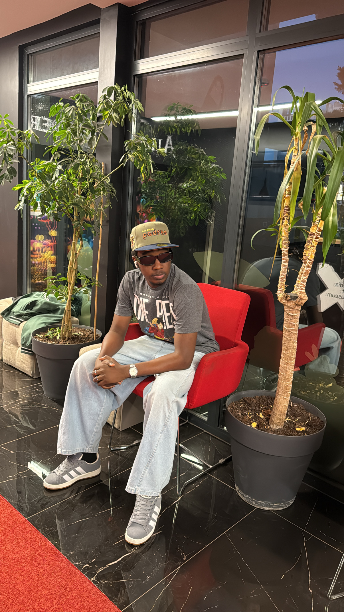

The Man Behind the Blog
Hey there! I’m Abdullahi Ibrahim Yakasai, the face behind this blog. You’ve probably seen me talk about a lot of my favorite things, like football, technology, and the latest news. But here’s a little more about me!
Born and raised in the vibrant city of Kano, Nigeria, I’ve always been a dreamer with a passion for exploring the world around me. I believe in living life to the fullest—whether it’s cheering on my favorite football team or diving into the latest tech trends, I’m always eager to share my thoughts and experiences with you.
My Love for Football
Let’s start with my first love—football! ⚽ Whether it’s watching a thrilling match or discussing my favorite players, football has always been my passion. You’ll often find me glued to the screen, cheering for my team (sometimes with my friends, sometimes just by myself, but always with excitement!). I’m always up-to-date with the latest football news, and I can talk tactics, player transfers, and match analysis all day long.
News Junkie at Heart
Alongside football, I’m also a huge news enthusiast. I love keeping up with current events—local and global. From politics to entertainment, I’ve got my finger on the pulse, and I enjoy sharing my thoughts on the stories that shape the world. Whether it’s breaking news or in-depth analysis, I strive to keep my readers informed while adding my personal perspective to everything I write.
Why This Blog?
This blog is my space to connect with like-minded individuals who share similar passions or just want to enjoy some fun, insightful content. It’s a place where I can express myself freely, share my opinions, and hopefully, spark some interesting conversations. I love engaging with people who have different viewpoints and creating a community where we can all learn from one another.
Outside the Blog
When I’m not writing or reading up on the latest in the world of football or news, I enjoy a variety of hobbies. I’m a big fan of video games, spending time with my friends, and traveling (even though I’m still trying to travel the world more!). I’m also an aspiring software developer, and I often dive into coding to build cool projects—just to keep my brain sharp and my creativity flowing.
So, why not stick around? I hope you’ll find something on this blog that sparks your interest, whether it’s the latest football update, a tech review, or just my thoughts on life. Thanks for visiting, and don’t hesitate to connect with me!
Let’s Connect!
Whether you want to chat about football, news, or anything else, you can always reach out. Let’s be social!